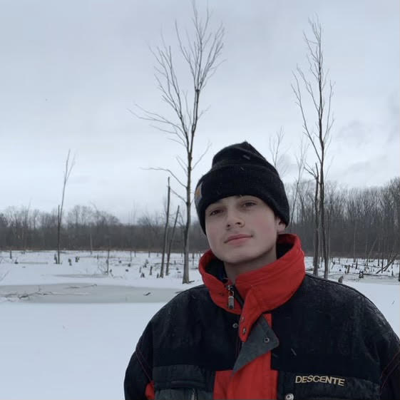

Here's an image of me in December, 2020, in Grand Blanc Michigan, where I grew up.
Email: micha183@msu.edu
Who is Jacob Michaels?
Hi, I'm Jacob, and I'm currently a senior at Michigan State University pursuing a major in Information Science, with a minor in Information Technology. I first began my data science journey my junior year of college, when I decided to switch my major to Information Science, and also declare a minor in Information Technology. This is about the time I began getting interested in Data Science and Machine Learning. After taking some Data Analysis courses, I decided to begin looking for internships. Luckily, after a few interviews, I was hired at Little Caesars as a Data Analyst! Over the summer we worked on an important machine learning model that tracked store cannibalization (not as violent as it sounds). I was lucky enough for them to extend my internship into the Fall and Spring. I pick up new skills and learn every day.
Data Science isn't my only hobby, believe it or not. I also enjoy to produce music such as instrumentals or edm tracks. I've been doing this for a few years, so I like to think that I'm not too bad! I enjoy being able to have a creative outlet such as this so that I can make stuff I'm proud of and enjoy. I also love to ski. Living in Michigan, I had to find a way to make Winter not so miserable. Skiing gives me a reason to actually look forward to winter and snow! When theres a snowstorm on the forecast, I get excited, whereas most people may be turned off by the snow. That's partially the reason I chose this picture of me for my website profile picture.
I hope you've enjoyed the Data Research projects I've chosen to display in this website, and please feel free to send me an email of future research you would find interesting.
Thanks!